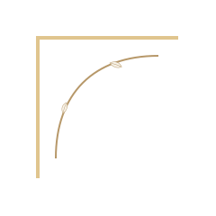

Educational journal
Short notes make laser, skin and aftercare easier to understand.

Advanced Aesthetic Biomedicine · Londrina, PR
Cookie guidance explains required preferences and inactive optional tracking.


Care pathways
Simple preferences, no hidden complexity.
Short notes make laser, skin and aftercare easier to understand.
Consultation brings clarity before any treatment decision.
Discuss in consultationEvery protocol begins with goals, history, suitability and clear expectations.
Laser care is planned around indication, comfort, intervals and aftercare.
Cookies Policy
Cookie information should be clear, compact and easy to understand.
Consultation
A short consultation route keeps decisions calm, private and evaluation-led.
CRBM 6277 · Londrina, PR